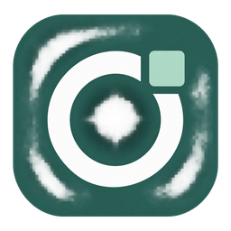

Seu caixa, sob controle.
Venda pelo catálogo ou código de barras. Acompanhe o carrinho, aplique descontos e gerencie abertura, sangria, suprimento e fechamento do caixa.

omnipdv Baixar OmniPDVDo primeiro produto ao fechamento do caixa. Organize vendas, estoque e clientes em um aplicativo feito para a rotina da sua loja.
INTERFACE CONCEITUAL · DADOS ILUSTRATIVOS
O OmniPDV é um ponto de venda para Windows que reúne frente de caixa, produtos, clientes e relatórios. Menos ferramentas espalhadas. Mais controle sobre o que acontece na sua loja.
Seus dados ficam em um banco SQLite local. Uma solução para uma loja e um computador, com exportação para Excel e recursos fiscais integrados.
Conheça a propostaDa venda ao fechamento, tudo se conecta.
Conheça os recursos do OmniPDV.
Venda pelo catálogo ou código de barras. Acompanhe o carrinho, aplique descontos e gerencie abertura, sangria, suprimento e fechamento do caixa.
Cadastre produtos, preços e códigos de barras. As vendas atualizam o estoque, e as devoluções registradas repõem os itens.
Consulte vendas e pagamentos, acompanhe clientes e contas a receber e exporte o histórico em planilhas Excel.
Também inclui gestão de equipe e NFC-e integrada. A emissão fiscal exige configuração da empresa, certificado A1, CSC e validação em homologação.
Para Windows 10 ou 11, 64 bits. Acesse o workflow oficial, escolha a execução mais recente com sucesso e baixe o artefato Instalador-Windows. Extraia o ZIP e abra o instalador — sem instalar Node.js ou Git.
Windows 10 / 11 · x64 · Download via GitHub Actions (exige login)Seu negócio está em movimento. A sua tecnologia também precisa acompanhar.
Conheça a assinatura do OmniPDV e veja se a proposta combina com o momento da sua operação.
Ficou com alguma dúvida?Descubra a experiência OmniPDV.
É um aplicativo desktop de ponto de venda para Windows, com caixa, estoque, clientes, equipe, relatórios e NFC-e integrada. Os dados ficam no computador da loja, em banco SQLite local.
O botão abre o workflow oficial no GitHub. Faça login, abra a execução mais recente com sucesso e baixe Instalador-Windows em Artifacts. Extraia o ZIP e execute o arquivo .exe no Windows 10 ou 11 x64. Os artefatos expiram após 90 dias; se não houver um disponível, será necessária uma nova execução pelo responsável.
Os valores, recursos incluídos, formas de pagamento e condições de cancelamento serão apresentados antes da contratação. O botão de assinatura levará ao canal oficial quando estiver disponível.
O aplicativo usa um banco de dados local para a operação de uma loja em um computador. Download, serviços fiscais e integrações de pagamento precisam de conexão. Faça backups regulares; a planilha Excel não substitui o backup do banco e dos XMLs fiscais.